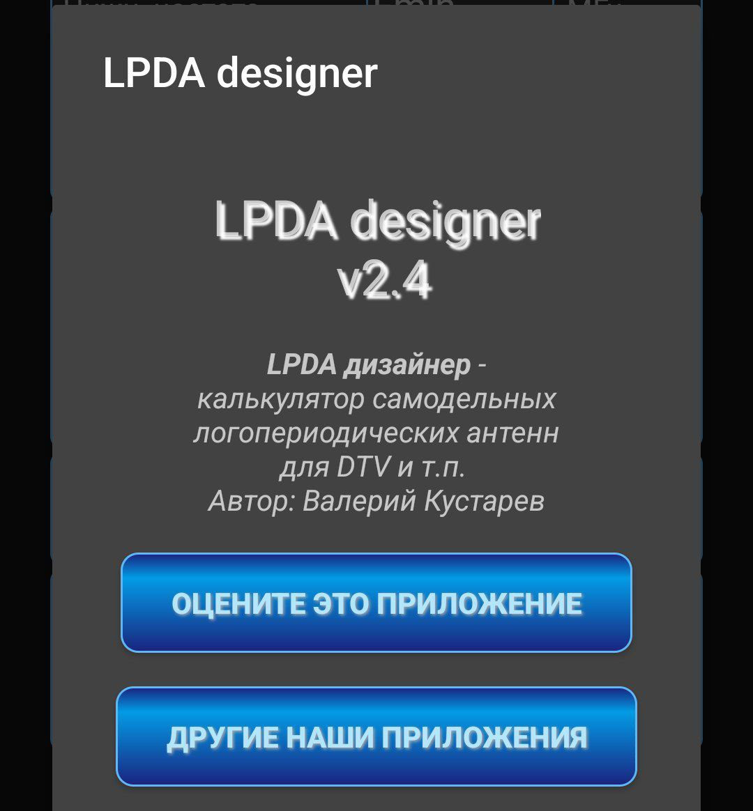

TechUAV Wiki
Эта страница не содержит исполняемого кода.
Alpine Quest
ZOV Карты
SPOTTER
PRONEBO v.7.3
WINDY v.80.0.0
UAVDATA 1.3
Калькулятор СТЦ
TBS Agent
DJI GO 4
DJI Fly v1.5.10
DJI Industry Pilot
Autel Sky v1.4.42
Fimi Navi 2020
Fimi Navi Mini
StmDfuUSB
BetaFlight v.10.10.0
Калькулятор дипольных антенн v6.5
Cantennator v17.0
Characteristics Impedance v.7.8
LPDA designer v.2.4
Coil32 v2024.07
CapCut
АртГруппа v1.19.2
OfflineMaps v3.10
Список сформирован из темы
Полезные программы для телефона
Источник темы
ТЭЧ БпЛА | FPV
21227 LPDA designer v.2.4
Из темы
Полезные программы для телефона
Из источника
ТЭЧ БпЛА | FPV
LPDA designer v.2.4
LPDA designer v.2.4 Калькулятор самодельных логопериодических антенн
[Internal]↪️Скачать APK
При поддержке
@xronikabpla
